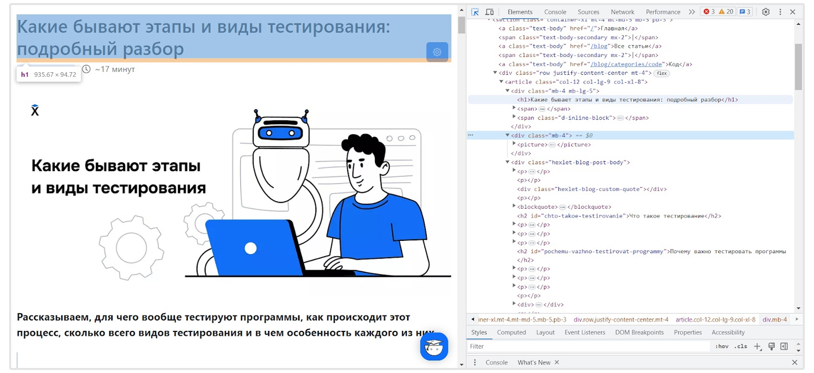
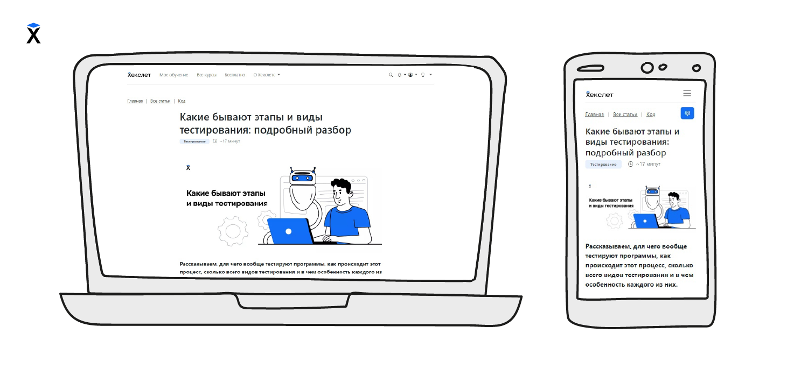

Статьи
Frontend-разработка: Верстка

Frontend-разработчик создает структуру, схему страницы с помощью языка разметки HTML
(HyperText Markup Language — «язык гипертекстовой разметки»).
Согласно дизайнерскому макету, программисты определяют, как различные элементы, такие как заголовки, абзацы, списки и
изображения, будут располагаться на странице.
Они размещают текст, изображения, кнопки и другие элементы на странице так, чтобы они легко
читались и удобно располагались.
Адаптивная верстка во Frontend-разработке

Frontend-разработчик делает интерфейс адаптивным, чтобы он хорошо выглядел и
работал на разных устройствах — компьютерах, планшетах и смартфонах.
Вот так все та же страница с недавней статьей Хекслета может выглядеть в
браузере и на iPhone XR.
Различия в задачах верстальщика от других разработчиков

Разработчик интерфейса всегда работает в команде и связан сразу с несколькими
специалистами. Среди них — дизайнеры, верстальщики, тестировщики и другие
разработчики.
Основная задача верстальщика — создание визуального вида веб-страницы.
Верстальщик структурирует и стилизует страницу с помощью HTML и CSS, уделяет
внимание расположению текста, цветам, шрифтам. Фронтенд-разработчик, как и
верстальщик, учитывает дизайн, но также занимается функциональностью страницы.
Создает интерактивные элементы, анимации, валидацию форм и динамическое обновление
данных без перезагрузки страницы.
Также фронтенд-разработчики работают с бэкенд-разработчиками.
Как мы уже выяснили, фронтенд — это все, с чем можно повзаимодействовать,
понажимать, поскроллить. А бэкенд (backend — «внутренний интерфейс») — это
внутренняя часть продукта и все, что находится «под капотом» — команды для
сервера.